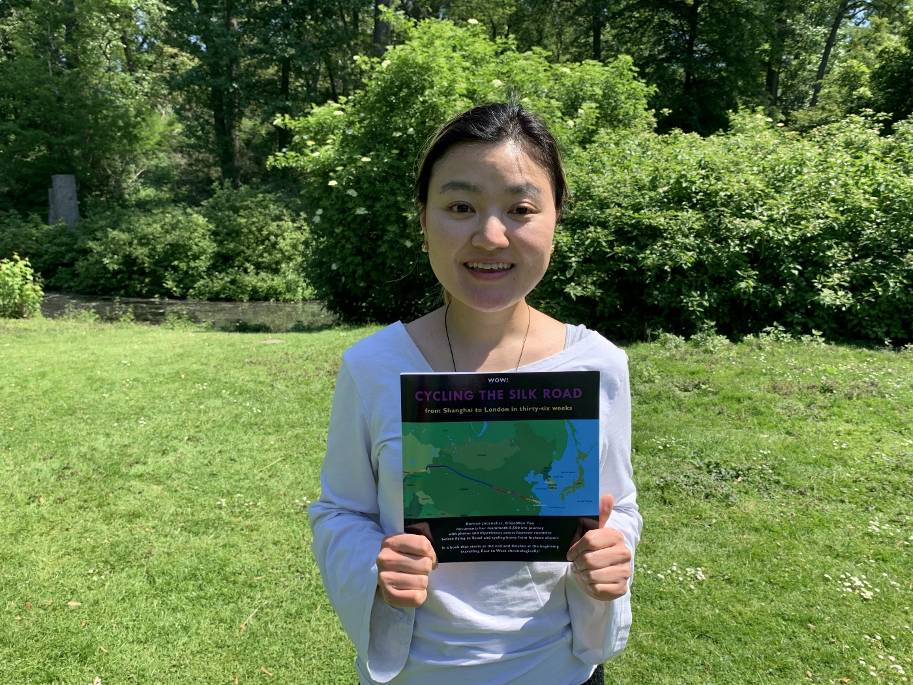

Hi, I'm Chaewon Yoo from South Korea. I'm a writer and marketing manager currently living in Bern. I'm also studying programming. I speak Korean (mother tongue), English (C2), Chinese (C1), German (B2), Spanish (B2), and French (A1). My hobbies include traveling, sports, filming and editing vlogs, reading books, writing blogs, hiking, singing, and dancing. My dream is to work in an international organization and start my own company.
In the past, I worked as a journalist for 6 years and as a marketing manager for 4 years in South Korea, China, Israel, Germany, and the U.S. In 2021, while studying for my M.Sc. in Innovation Management, Entrepreneurship & Sustainability (IMES) at Technische Universität Berlin, I worked at the IoT startup weeve in Berlin.

I have written three books, including "Cycling the Silk Road" in English and "Cycling across Eurasia" in Korean. Cycling the Silk Road, for real?

Yes, one of the coolest things I've done in my life is a cycling trip from Seoul to London, covering a distance of 8567km across 14 countries.

During my 3.5-year stay in China, I worked as a journalist and wrote a bestselling book called "Do Business Like Chinese Startups".

I also moderated panels, where I asked questions about technology trends to VCs and entrepreneurs in China, and then wrote articles about the discussions.

In 2014, while working for the data visualization startup NewsJelly, I was sent to Silicon Valley for business development. My task was to pitch our company to big tech companies for potential partnerships.

My career began in 2013 as a journalist. I conducted face-to-face interviews with a total of 75 startups in Israel and reported on them. You can still find my videos on the YouTube channel "ISUP".
I settled down in Bern in July 2022, and I currently hold an Aufenthaltsbewilligung B, which allows me to work in Switzerland. I am particularly interested in the ESG and blockchain fields as I believe they hold great potential for the future. I am actively seeking a position as a front-end developer in Bern. Please feel free to contact me at evayooare@gmail.com.